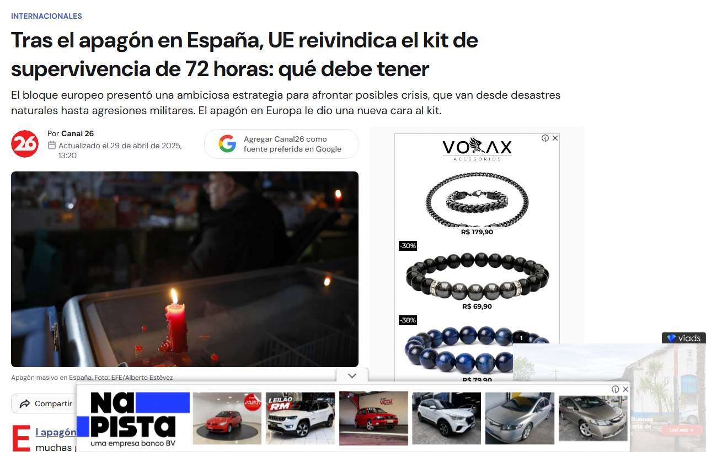
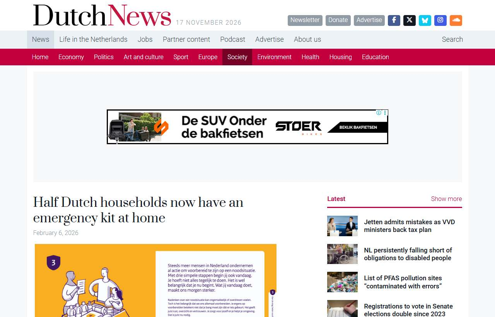
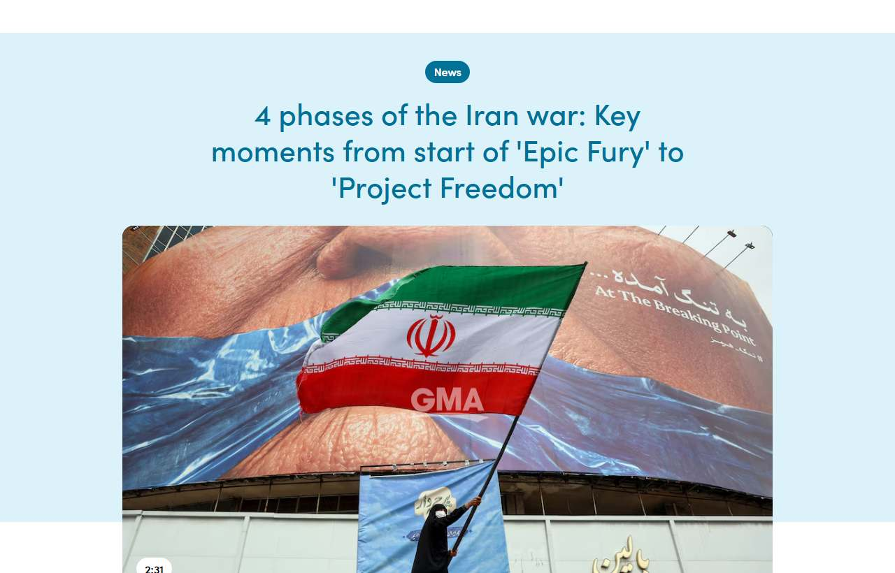
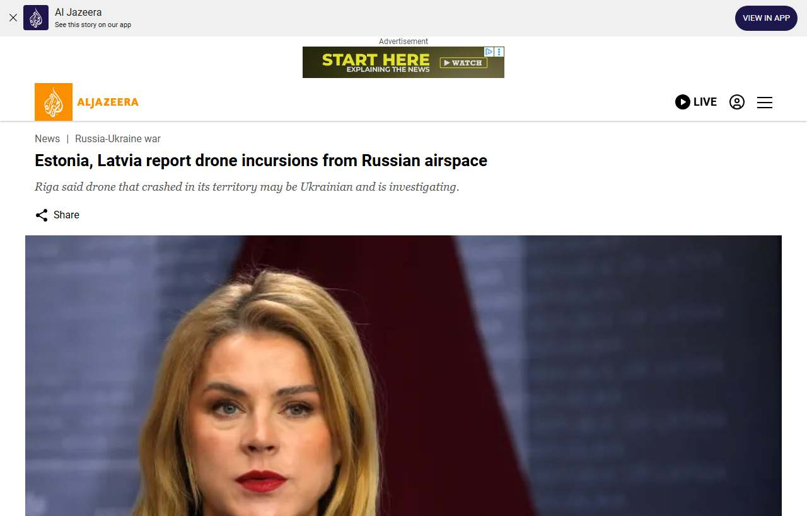
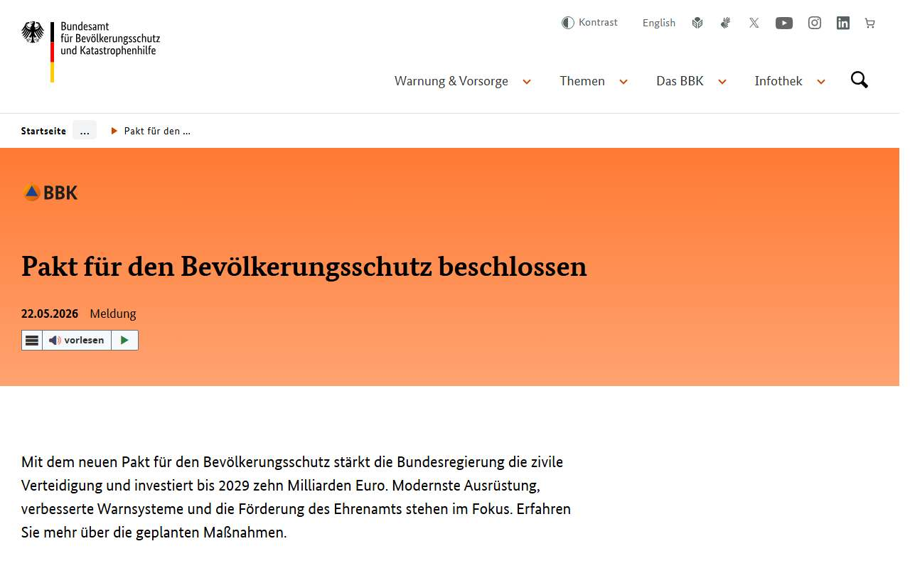
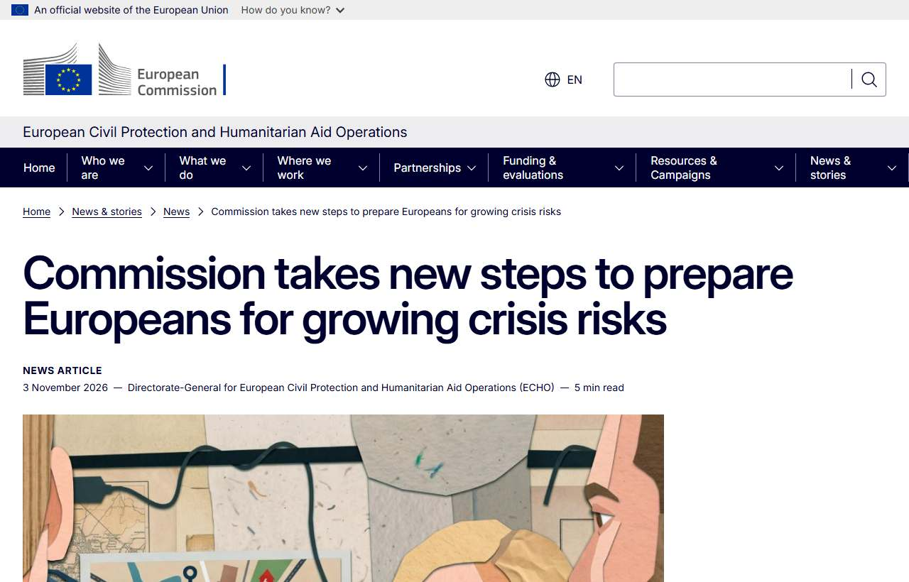
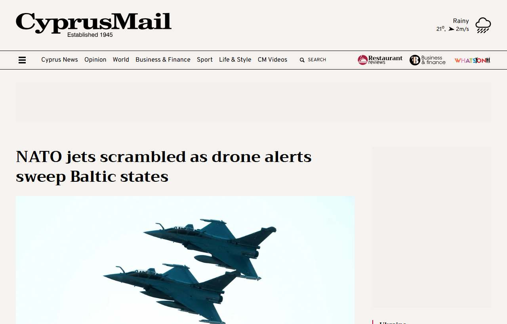

O que aconteceu, em ordem
A linha do tempo mostra os fatos que fizeram os europeus procurar o assunto. Bolinha verde: governo pedindo para se preparar. Bolinha vermelha: susto ou guerra.
01Linha do tempo
Clique no print para abrir a notícia.
A Rússia invade a Ucrânia
Foi a maior procura por "3ª Guerra Mundial" em quase todos os países.
Os nórdicos mandam folheto de guerra para as casas
Suécia, Noruega, Dinamarca e Finlândia ensinam a aguentar de 3 dias a 1 semana.

A União Europeia pede estoque de 3 dias pela primeira vez
Primeira grande onda de busca na Europa.

Apagão na Espanha e em Portugal
Dois países inteiros sem luz. A busca nos dois bate o recorde.

Holanda, França e Tchéquia mandam guias para as casas
Na Holanda, metade das casas passa a ter kit.

Começa a guerra com o Irã e o mar de Ormuz fecha
Volta o medo de guerra grande e de faltar combustível.

Drones caem na Lituânia, Letônia e Estônia
Na Letônia, a crise derruba o governo em maio.

Bélgica lança campanha nacional de 4 anos
A busca belga bate o recorde de 5 anos.

Alemanha separa 10 bilhões de euros para proteção civil
E admite que os abrigos públicos não cabem nem 1% do povo.

Drones na Romênia e na Moldávia; Polônia ensina a se abrigar
Na Polônia, a busca bate o recorde do ano.

Reino Unido pede: prepare a casa para 3 dias
Água, enlatados e lanternas somem das prateleiras.

A União Europeia publica o guia de 3 dias
É o que deixa o assunto quente agora em 13 países.

Alerta de abrigo nos três Bálticos
Drones vindos da Rússia ou de Belarus. O alerta é cancelado em horas.

02Quanto tempo cada governo pede para aguentar
Onde o governo já manda guia de graça (nórdicos, Bálticos, Polônia, Tchéquia), um guia pago precisa dar mais: cardápio, lista de compras com preço e o que fazer em cada dia.
03Como usar na oferta
Vídeos de notícia mais vistos
| Rede | Canal | Assunto | Visualizações | Comentários | Data | Link |
|---|---|---|---|---|---|---|
| youtube | BBC News | Major retailers have reported a big rise in sales of tinned food, bottled water, wind up radios and batteries, after the government launched its 'be r | 6.405.757 | 7.700 | 27/10/2026 | abrir ↗ |
| tiktok | metrouk | The EU has asked citizens to put together 72-hour emergency survival kits in case of crisis. The kits, which would contain important items such as foo | 3.200.000 | 1.822 | 27/03/2025 | abrir ↗ |
| tiktok | abc.es | 👉 La Comisión Europea ha presentado su estrategia de preparación ante una crisis y, entre otras cosas, ha aconsejado a los hogares hacerse con un kit | 3.100.000 | 2.407 | 29/03/2025 | abrir ↗ |
| tiktok | 509stories | un kit de survie va être envoyé aux français pour se preparer à l’invasion russe! #actu #guerre #russie #france #armée | 1.600.000 | 2.834 | 18/03/2025 | abrir ↗ |
| youtube | BBC News | Preppers have long been planning for the worst-case scenario. Are governments now doing the same? The UK government has launched a national “Be Rea | 1.119.713 | 1.800 | 06/11/2026 | abrir ↗ |
| tiktok | masdak_trading | Un guide de survie à la guerre et aux crises majeures sera envoyé à tous les foyers français d’ici l’été #info #guerre #manueldesurvie | 1.100.000 | 2.252 | 18/03/2025 | abrir ↗ |
| tiktok | cbsnews | A priest in Vilnius, Lithuania, is appealing for the public’s help to identify a man who stole a statue of the crucified Jesus from a church before dr | 1.100.000 | 2.122 | 15/11/2026 | abrir ↗ |
| youtube | 10 News | The British Government is preparing for the possibility of a large-scale conflict, with a new national ‘war book’ being drawn up to help the public re | 1.050.479 | 3.800 | 26/08/2026 | abrir ↗ |
| youtube | Firstpost | EU Tells Public: Stockpile 72 Hours of Emergency Supplies | Vantage with Palki Sharma | N18G The European Union is urging its 450 million citizens to | 950.773 | 3.000 | 27/03/2025 | abrir ↗ |
| youtube | 60 Minutes | #news #russiaukrainewar #lithuania | 793.992 | 1.300 | 20/03/2024 | abrir ↗ |
| youtube | India Today Global | Is the world preparing for doomsday? Governments across Europe and Asia are urging citizens to prepare emergency supplies, with 17 countries and the E | 701.412 | 924 | 28/10/2026 | abrir ↗ |
| youtube | India Today Global | Why are 17 countries and the European Union telling citizens to prepare for emergencies? From the United Kingdom and Japan to Germany, France, Sweden, | 668.965 | 1.000 | 27/10/2026 | abrir ↗ |
| youtube | The Wall Street Journal | On NATO’s Eastern Flank, low-grade Russian attacks are ramping up. For decades, Lithuania and the Baltic states have issued warnings about the threat | 633.641 | 2.800 | 26/11/2025 | abrir ↗ |
| youtube | LBC e LBC UK Politics | Across Britain, there is a growing army of people spending thousands of pounds to amass years' worth of supplies and train for crisis situations. LB | 623.985 | 1.700 | 30/10/2026 | abrir ↗ |